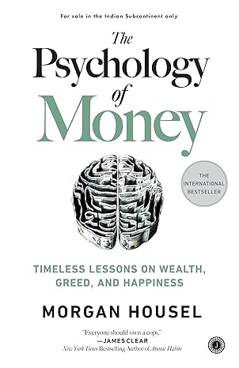
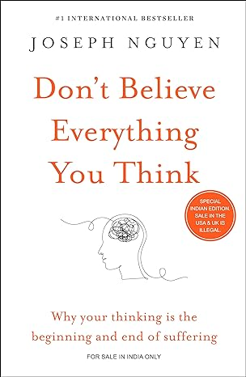

| Name |
Price |
Cover |
About Author |
| The Psychology of Money |
₹359/- |
 |
Morgan Housel is an author and speaker known for his insights on finance and investing. He is a partner at Collaborative Fund and the author of "The Psychology of Money," which explores the emotional aspects of financial decision-making. Housel’s work combines storytelling with practical advice, making complex concepts accessible. |
| A Story of Struggle |
₹5389/- |
 |
Ashok Kumawat is an author known for his motivational and self-help books, such as "The Turning Point: 45 Steps to Achieve Success." He also works as an associate professor in biomedicine at Örebro University in Sweden. |
| Don't Believe Everything You Think |
₹259/- |
 |
Joseph Nguyen is the author of the #1 international bestseller "Don't Believe Everything You Think." His work focuses on helping people overcome psychological and emotional suffering by understanding the root causes. He is a spiritual thought leader dedicated to unlocking the infinite potential of the mind. |
| IKIGAI |
₹499/- |
 |
Héctor García and Francesc Miralles are co-authors of the bestseller "Ikigai: The Japanese Secret to a Long and Happy Life." García, a long-time resident of Japan, writes about Japanese culture, while Miralles, a specialist in psychology, has authored numerous books and novels. |
| Sapiens |
₹799/- |
|
Yuval Noah Harari is an Israeli historian, philosopher, and bestselling author known for his works “Sapiens,” “Homo Deus,” and “21 Lessons for the 21st Century.” His writings explore the history and future of humanity, examining themes like consciousness, free will, and the impact of technology. |
| Digital Revolution |
₹1590/- |
|
Kapil Khurana is a financial expert and author, leading Kapil Khurana Financial Ventures Pvt. Ltd. With extensive experience in financial markets, he has achieved remarkable results for clients. He is also known for his book “Digital Revolution,” which explores the impact of technology on business efficiency. |